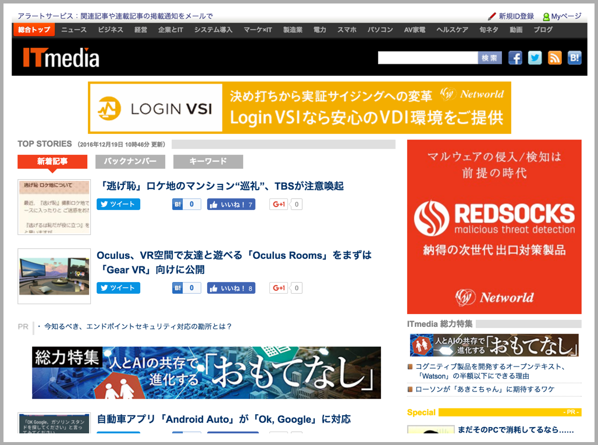
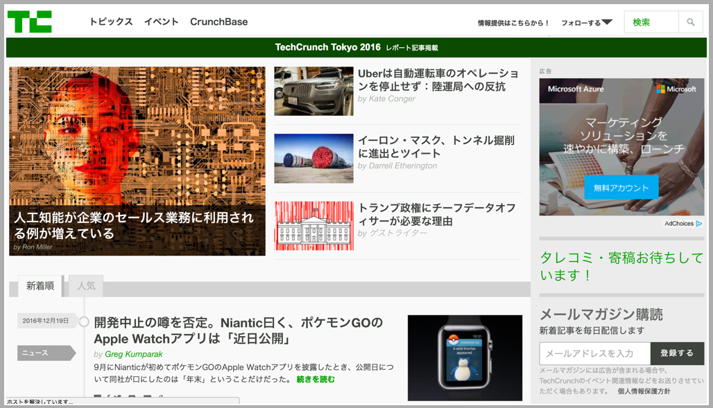

本日はプレスリリースの送付について詳しく見ていきたいと思います。
プレスリリースは通常、自社サイトで「〇〇サービスを××月××日に開始します！」というようなメディア向けの情報公開を意味することが多いと思います。しかしながら、大手企業のWEBサイトならいざしらず、通常はメディアの方が１ベンチャー企業のWEBページを確認することはほぼ無いと思って良いでしょう。したがって積極的にメディア向けに情報発信をする必要がありますが、私が普段行っている方法をここではご紹介したいと思います。といっても特に目新しいものではなく、特定のメディアにPDFと写真を添えてメールで送るというだけなので、ハードル低めにご参照ください。
まず、送付先のメディアですが、私は下記のメディアに送るようにしています。Googleの検索で、「プレスリリース 送付先 メディア」のようなキーワードで検索してもらえると、多くのサイトが表示されるのでそちらを参考にされてもよいと思います。ただ、私の経験上、検索結果に出てくるサイトの情報は少し古く、そもそもメディアが存在しないというケースもありますのでご注意ください。個人的には、2016年12月末現在では下記メディアでほぼ主要なWEBメディアは網羅できていると思います。
・インターネットメディア系
１、ITmedia（メール送付先：release@ml.itmedia.co.jp）

２、@IT（メール送付先：ait_release@ml.itmedia.co.jp）
３、TechCrunch Japan（メール送付先：tips@techcrunch.jp）

４、Techable（メール送付先：release＠techable.jp）

５、ネットベンチャーニュース（メール送付先：http://llp.leaf-hide.jp/form_contact.html）
６、はてなニュース（メール送付先：news@hatena.ne.jp）
７、マイナビニュース（メール送付先：news-pr@mynavi.jp）
８、ストレートプレス（メール送付先：release@straightpress.jp）

その他にも、もし商品やサービスが社会的な問題解決につながるようなものであったり、開発に何らかのストーリーがあるような場合は新聞社に送付するのも良いでしょう。もちろん掲載される確率や、先方からのアクションがある確率は少ないかもしれませんが、もし取り上げられることがあれば認知度は急上昇しますので可能性は排除せず、頭の片隅に入れておいていただければ、と思います。
・その他
９、 読売新聞東京本社社会部（メール送付先：shakai@yomiuri.com）
１０、朝日新聞東京本社（メール送付先：shakaibu@asahi.com）
１１、フジサンケイビジネスアイ（メール送付先：release@sankei.co.jp）
次に、プレスリリースの送付内容ですが、PDFはこんな感じでいいかと思います。
これは私が以前作成したアプリのプレスリリースですが、ポイントは
①導入部分：商品やサービスが解決できる社会問題などの大きなテーマや、そもそもの市場規模等
②本文：商品やサービスの具体的内容
③送付元：開発会社の連絡先、WEBページのURL、開発者のブログのURL等
を簡潔に記載することかと思います。
また、このPDFの内容を簡潔にまとめたものをメール本文に記載し、メディアの方が万が一利用したいと思った場合に備えて幾つかイメージ（サービスのスクリーンショット等）も添えておくと完璧でしょう。
最後に、一番ここが肝心なのですが、プレスリリースを送付して実際にメディアに掲載される確率は、宝くじが当たるくらいの確率だと考えてください。何が言いたいかというと、プレスリリースの最低限の目標はメディアの方に情報を知ってもらうということなので、掲載されなかったからといって諦めてしまっては元も子もありません。私の経験上、少なくともメールの送付元に記載している企業URLやブログURLにメディアの方が興味を持って訪問してもらえることが多いです。最初は誰だこいつ？みたいな感じで受け止められるのは仕方ないので、根気強くプレスリリースを送付し続けて、彼らにこれは面白い！と思ってもらえる瞬間を待ちましょう。とにかくめげないことです。頑張ってください！